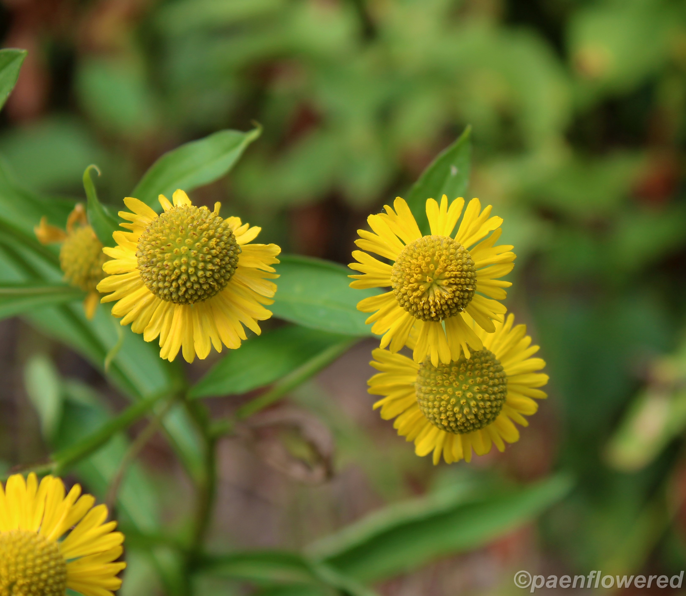

Pennsylvania's Native Plants
White Turtlehead
(Chelone glabra)

Description
This native perennial species is a member of the snapdragon or figwort family. The flowers are swollen
and have 5 petals forming 2 lips and grow in a tight cluster at the tip of the smooth 4-sided stem.
Each flower is about one inch long. The shape of the flower does suggest the head of a turtle, as the
upper and notched lip arches over the 3-lobed lower lip. The lower lip is bearded with hairs at the
throat. When a bee struggles to enter the tubular corolla it looks like a turtle trying to eat a bee.
The flowers are generally white, but sometimes tinged in magenta or pink, especially as they age. They
can be 1 to 1.5 inches long. The flower spike blooms from bottom to top
(Source).
Growing Requirements
Chelone glabra requires sun, but it can tolerate shady or partially shady environments. It prefers
moist to wet soils with a slightly acidic pH level. Seeds should be planted outside in cooler fall or spring
months
(Source).
Tawny Cottonsedge
(Eriophorum virginicum)

Description
This perennial species of cotton sedge is found mostly in northeastern North America and British Columbia in Canada.
It belongs to the sedge family. It is a wetland plant that grows in bogs, swamps, and wet meadows. The bristles of
this species are yellow-brown. Most other cotton sedges of this genus have white bristles. Like most sedges, the
stems are triangular in cross-section. The plant can grow over 3 feet in height. The flowers are born at the tip of
the stem, in dense, head-like tufts consisting of multi-flowered spikelets. The fruit is a seed-like achene,
surrounded by hairs and scales. The leaves are narrow and flat with rough margins. It can spread by seed or by
horizontal growth of the rootstock. Historically the tawny cottonsedge is found in most of the counties of the state
(Source).
Growing Requirements
Eriophorum virginicum requires a sunny environment with lots of water available. It tends to grow in places
with high soil moisture and low soil pH. The plant requires relatively low maintenance
(Source).
Common Sneezeweed
(Helenium autumnale)

Description
This sturdy native perennial wildflower is another of the group plants in the aster family that are often grouped,
in common perception, with the sunflowers. In this case the composite flowers has ten to twenty drooping yellow ray
florets. Each of these petal-like rays has three scallops at their edges. The central disk is globular and ocher-
yellow in color. The disk flowers are tubular. Both the disk and the ray florets are fertile. Each flower head is
one to two inches in diameter. The leaves are six inches long, lance-shaped, toothed and alternate on the stem. The
base of the flower extends down the stems to form “wings.” The stem is stout, smooth and has many branches. The fruit
is an achene without any hairy tufts and which is partly water-distributed. The plant grows 2-5 feet tall in sunny or
partly shaded areas of thickets, swamps, in wet meadows and along the sides of streams throughout much of the eastern
half of North America, except for the Maritime Provinces of Canada and the Arctic. It blooms from August to November
(Source).
Growing Requirements
Helenium autumnale requires a sunny environment and requires regular watering. It can grow in moist, clay
soils and prefers a more alkaline soil. The plan thrives best in moist and damp areas
(Source).
Great Blue Lobelia
(Lobelia siphilitica)

Description
This native perennial wildflower is one of the most beautiful of the late summer flowers. It is the largest of the
blue lobelias and produces a dense spike of 1-1 ½″ long tubular and lipped flowers. The plant grows from 1 to 4 feet
high on a stem that is almost never branched. The flower spike's height can vary from 6" to 2 feet. The deep blue
flowers form in the axils of leafy bracts. They have 2 narrow lobes or 'ears' on top and three wider lobes below—the
"lip". The corolla is in the form of a tube. Both the corolla tube and the lower lips are streaked with white. The
calyx is hairy
(Source).
Growing Requirements
Lobelia siphilitica requires a sunny environment but can tolerate partial shade and shady environments. It
prefers moist to wet soils with a slightly acidic pH level. It can grow in clay, loam, and sand. The plant is not
drought-tolerant, and requires regular watering
(Source).
Fall Phlox
(Phlox paniculata)

Description
Most phlox species bloom in the spring so this species can be identified simply by its flowering season - July to
September. This native perennial species is a member of the phlox family. The stem is stouter than the other phlox
species and the plant is usually upright. The plant has wide leaves and very prominent veins that stand out on the
undersurface of the leaf. These ovate or lance-shaped leaves are opposite and 3-6 inches long. There usually are
15-40 pairs of leaves below the fragrant flower cluster. The plant grows 2-6.5 feet high, the tallest of our native
phloxes. Individual flowers are about one inch long. There are five spreading petal-like lobes fusing to form a long
slightly hairy corolla tube. There is some variation in the size and shape of the petal-like lobes. Flowers form in
a dense pyramidal cluster at the top of the smooth stem. As with other phlox species, the flower color varies from
white to pink to light lavender
(Source).
Growing Requirements
Phlox paniculata requires a sunny environment and prefers moist, organic or loam soils. It's reccomended to
allow these plants to have at least 6 hours of sun per day if possible. The plant frequently produces a powdery mildew
on the leaves, which can be treated with fungicides
(Source).